黑色链接会跳转、黄色展开子菜单
二级python选择题
-
某二叉树中有15个度为1的结点，16个度为2的结点，则该二叉树中总的结点数为（）。
- 套公式：
总结点 = 度0 + 度1 + 度2 - 公式2：
度0 = 度2 + 1 - 公式3：
度2 = 度0 - 1 - 公式4：
总分支个数 = 度0 * 0 + 度1 * 1 + 度2 * 2 - 公式5(公式4扩展)：
总分支个数 = N - 1 -
度1 的两种情况
-
在非完全二叉树状态下
- 度0，无法计算
-

-
在完全完全二叉数状态下
-
在普通二叉树里，叶子(
n0)可以长在任何地方。但在完全二叉树里，叶子只能出现在最后两层（倒数第一层和倒数第二层），而且必须从左往右紧密排列。 - 说白了：就是当前节点，右边有分支，左边必须有分支
- 度1：只有
0和1 - 当总节点数
N是偶数：度1 = 1 - 当总节点数
N是奇数：度1 = 0 -

-
在普通二叉树里，叶子(
-
名词解释
-
度(
Degree一般用小写n表示)：就是指当前节点伸出去的分叉(子节点)的个数 - 通常用
N表示总节点数 度0(
n0)：- 名词：表示当前节点 一根树枝都没伸出去，它就是这跟树枝的末端。也叫："叶子节点"
- 数量(非常重要)：表示，节点分支数量是
0，节点之和
-
度1(
n1)- 表示当前节点 只伸出了一根树枝（要么只有左孩子，要么只有右孩子）。——也叫“独苗”。
- 数量(非常重要)：表示，节点分支数量是
1，节点之和
-
度2(
n2)- 表示当前节点 只伸出了两根树枝（左边一根，右边一根）。——也叫“双全”。
- 数量(非常重要)：表示，节点分支数量是
2，节点之和
- 总边数(总分支数) = 每个分支数量对应的节点数量(
nk)，k为分支数量之和。 总边数(总分支数) = 0 * n0 + 1 * n1 + 2 * n2- 总边数(总分支个数)：因为根节点不会有分支与它相连，所以总分数个数，始终比总节点数少1
- 所以：
总边数(总结点数) = N - 1 - 所以：
N = n0 + n1 + n2 - 所以：
n0 = n2 + 1 - 注意：
n1要看是在 完全二叉树，还是在：非完全二叉树内，它们的状态不一样
-
度(
-
-
例题：题目：一棵完全二叉树共有 700 个节点，请问叶子节点（度0）有多少个？
解：
已知N = 700
因为是完全二叉树，N是偶数，所以:
700 = n0 + 1 + n2
已知n2比n0少1则：
2n1 + 1 = 699
n1 = 698 / 2 = 349
no = 350
综上所述：叶子节点数(no) = 350 -
通过二叉树——推导K叉树
- 已知二叉树只能有两个分支(
n1、n2) - 反推K叉树可以有K个分支(
n1、n2、n3 ... nk) - 总节点不必多说：
N = n0 + n1 + n2 + n3 + ... + nk -
n0的推导过程
N = n0 + n1 + n2 + n3 + ... + nk
总边数(总分支数) = 每个分支数量对应的节点数量(nk)，k为分支数量之和
总分支数 = 0 * n0 + 1 * n1 + 2 * n2 + 3 * n3 + ... + n * nk
总边数(总分支数) = N - 1
可得：
N - 1 = n1 + 2n1 + 3n3 + ... + knk
n0 + n1 + n2 + n3 + ... + nk = n1 + 2n2 + 3n3 + ... + knk + 1
n0 = n2 + 2n3 + 3n4 + ... + (k-1)nk + 1 - 所以K叉树的
n0公式是：n2 + 2n3 + 3n4 + ... + (k-1)nk + 1
- 已知二叉树只能有两个分支(
- 套公式：
栈与堆结构
- 栈与堆结构是：python栈与JavaScript栈对比
- 栈模型
- 关键字——子程序调用就是考栈知识
线性结构
- 线性结构定义：数据排列方式是一对一，意在：有序、可索引（或逻辑上按顺序排列）的数据结构，才是线性结构。
-
线性结构
数据结构 是否有序 是否可索引(通过位置) 操作方式 是否属于线性结构 列表( list)有序 可索引( [0])任意位置操作 是 元组( tuple)有序 可索引( [0])不可变、只能读 是 字符串( str)有序 可索引( [0])不可变、只能读 是 字典( dict)插入有序( 3.7+)不可索引(只能通过键) 键值对映射 ❌是散列结构 集合( set)插入有序( 3.7+)不可索引 元素去重、集合运算 是散列结构 栈( Stack)有序(入栈顺序固定——插队入栈) 不可索引 后进先出——插队先出栈 - 可以理解为叠盘子，后面的放在上面，取盘子先出上面取出
- 逻辑按排序排列
- 同样有前后顺序——是线性结构
队列( Queue)有序(排队入队) 不可索引 先入先出——排队先出 - 可以理解为，排队付款，先到先付款，付完款先离队
- 逻辑按顺序排列
- 同样有前后顺序——是线性结构
叉树 在节点上看是有序的，但整体看是嵌套层级 不可索引 - 一对多，从定义上就不是线性结构
-
每个节点可以存在多个分支，分支数量由(
K叉树的K决定) - 所以叉树，不是线性结构，而是 树形结构
总结 最简单分辨：是否有序、能不能索引 特殊：看是否有前后顺序、比如：排队有前后顺序、叠盘子有前后顺序

软件三要素
- 软件三要素是：程序、数据及相关文档
扇入数与扇出数
- 在python中模块指的是：名为
.py的文件 - 在软件工程里面(考试)里指的是：一个相对独立的功能单元
-
软件工程模块可以是：
- 一个
.py文件 - 一个文件里的函数
- 一个文件里的类
- 一个类里面的方法
- 一个
- 扇入数与扇出数的概念是在软件工程
- 扇入数：指的是'模块'被调用的次数
- 扇出数：指的是自身调用其他'模块'的次数
E-R图
- 表示实体与属性之间的关系
- 题目：将E－R图转换为关系模式时，实体和联系都可以表示为：关系
表结构
- 题目：
采用表结构来表示数据及数据间联系的模型是(关系模型)。

Python语言提供三种基本的数字类型
- Python语言提供三种基本的数字类型：整数型、浮点型、复数型('实数 + 虚数')
TypeError
TypeError：操作数数据类型不匹配、函数调用传参数量/类型不匹配
NameError
NameError：访问未定义字面量、调用为定义函数、类
FileNotFoundError
FileNotFoundError：文件路径不匹配
UnicodeDecodeError
UnicodeDecodeError：读取文件时，指定的编码方式与实际文件编码不匹配，导致解码失败。
ValueError
ValueError：函数传参传入支持数据类型、当时值错误。- 比如：int()：本身支持传入字符串，但是字符串限制为整数字符串、如果参数浮点数、非数字字符串，就会报错：
ValueError
io.UnsupportedOperation
io.UsuportedOperation：文件操作模式与调用的方法不匹配”时触发。- 比如：文件操作模式是：
r、b、rt、rb——均是只读模式，如果使用：write()写入方法就会报错，内容是：not writable - 比如：文件操作模式是：
w、wt、wb、a、at、ab——均是写入模式，如果使用：read()写入方法就会报错，内容是：not readable
程序设计语言类别
- 汇编语言、机器语言、高级语言
-
机器语言
- 也叫二进制语言
- 特点：计算机能直接识别的语言
汇编语言
- 用助记符（如
MOV、ADD）表示机器指令 - 汇编语言通过汇编器翻译成机器语言（二进制），计算机才能直接识别。
高级语言
- 目前接触的语言均是高级语言：python、JavaScript、(HTML、CSS)也叫标记语言、MySQL...
程序控制结构
- 程序结构：是以某种顺序执行的一系动作，用于解决某个问题
- 理论已经证明，无论多复杂的算法，都可以通过三种基本控制结构构造出来。这就是“结构化程序设计”的理论基础
- 三大结构层：顺序结构、选择结构、循环结构、
-
顺序结构
- 程序按照代码的 书写顺序、从上到下依次执行
- 特点：最简单、最基础，没有分支和循环。一个语句执行完，控制自动转到下一句
-
选择结构
- 程序根据 某个条件是否成立，决定执行那一段代码。选择结构在考试中常被称为 分支结构
- 特点：程序执行到此处，会根据条件判断，选择一个分支执行。一个结构，只会执行一个分支
-
常见形式
- 单分支(
if)：条件成立就执行，否则跳过 - 双分支(
if-else)：条件成立执行if代码块，否则执行else代码块 - 多分支(
if-elif-else/match-case/ 非python结构：switch-case)：先判断if、然后逐个判断elif直到符合条件执行对应代码块，均不符合，则执行：else内代码块
- 单分支(
- 考试容易模糊点：双分支结构，也能通过嵌套的方式，达成多分支结构
-
❤️多分支结构本质是：从多个条件，执行符合条件的代码块 ❤️if-else完全可以做到： if 条件： if 条件: match 条件: 代码块 代码块 case 模式1: else: elif 条件: 代码块 if 条件: 代码块 case 模式2: 代码块: elif 条件: 代码块 else: 代码块 case _: if 条件: else: 代码块 代码块 代码块 else: 代码块 - 以上这种嵌套结构，与
if-elif-else/match-case本质是一样的，多个条件分支，运行符合的代码块，所以if-else嵌套同样可以实现多分支结构 - if基础语法
-
match模式匹配-python特有与
switch-case相似
-
循环结构
- 程序满足某个条件时，重复执行一段代码
-
三种主要类型
循环结构的三种类型(软件工程标准分类)
类型 名称 判断时机 执行特点 伪代码/示例 当型循环 while先判断，后执行 条件为真才执行，条件不成立则，依次都不会执行 -
JavaScript写法
while (条件) {循环体} -
python写法
while 条件 : 循环体
直到型循环 do...until/ do...while先执行，后判断 至少执行一次，直到条件为假才停止 -
JavaScript、C++...写法
do {代码块} while (条件) -
其他写法
do {循环体} until (条件) -
注意
python并没有内置的直到型循环
计数/遍历型循环 for遍历完指定序列/集合后结束 循环次数由遍历对象的元素个数决定，不依赖条件判断 -
JavaScript写法
for (变量初始化,循环条件,改变逻辑) {代码块}for 字面量 in 可遍历for 字面量 of 可遍历 -
python写法
for 字面量 in 可迭代对象for 字面量 in range(开始下标,结束下标,步长)...
通过链接，动态显示的内容，除
do-while，其他均是以python为主python对应这三种类型类型 python实现 是否原生支持 当型循环 while 条件:原生支持 直到型循环 python没有 do..until语法- 需要手动模拟
while True: 循环体; if 条件: break模拟
计数/遍历型循环 for 变量 in 可迭代对象:原生支持 -
-
程序控制结构题型1

列表方法：remove()
- 方法：
remove(元素值) - 传参要求：必须且只能传 1 个参数。
- 查找方向：从左往右。
-
执行逻辑
- 若参数数量不对（如 remove() 或 remove(1,2)） → 触发 TypeError。
- 若参数类型正确，但列表中不存在该元素 → 触发 ValueError。
- 若匹配成功 → 删除第一个匹配的元素，无返回值。
列表方法题一
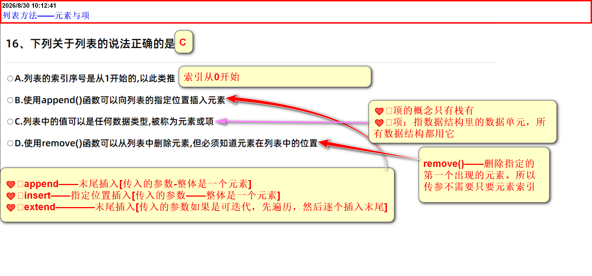


异常处理题二
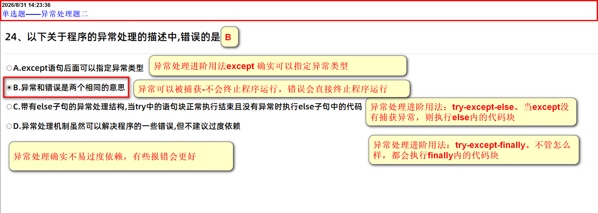
方法：pow()
方法pow()：-
不导入pow的情况下：
- 规定两个或三个参数，其他状况：TypeError。
- 两个参数，执行幂运算
- 三个参数，执行幂运算 然后模运算
- 语法：pow(2, 3, 2) 等价于 2 ** 3 % 2
- 操作是必须是数字类型，否则：TypeError
-
导入math模块
- 通过补充知识，可以看到，覆盖原本的内置方法
- 规定两个参数，其他状况：TypeError
- 幂运算
- 语法：math.pow(2, 3 ) 等价于 2 ** 3。必须先：import math
- 操作数必须是数字类型，否则：TypeError。
- 返回值(结果)：始终是浮点数
作用域
-
自行补充——作用域
- 在python中，只有函数是全封闭作用域(意思是：变量就是函数的私人物品，外部无法访问)
- 除非使用关键字：global，提前声明，否则外部无法访问
- 类是半封闭作用域(因为类可以通过点语法，外部访问内部的属性和方法，并不是直接杜绝外部访问)
-
作用域(动态显示)
方法pow习题一
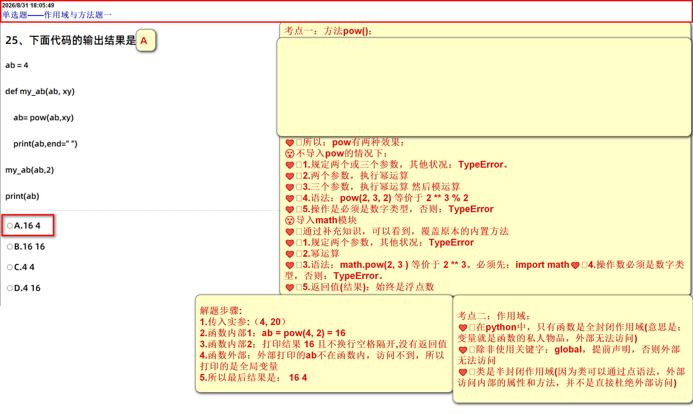
运算符习题二
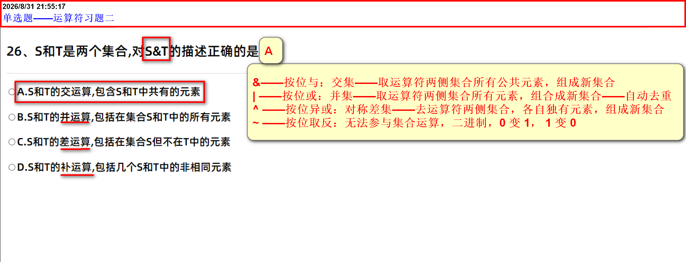
文件处理习题一
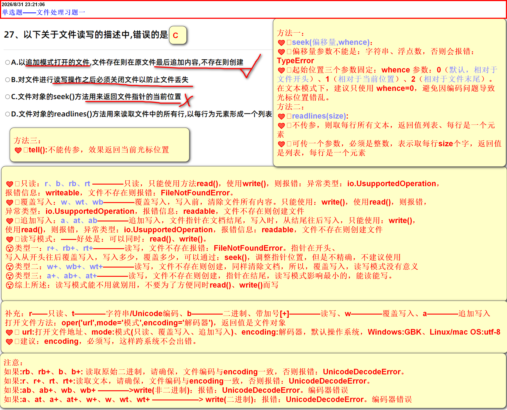
元组习题一
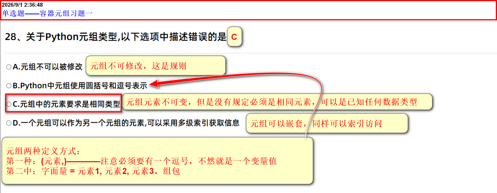
文件处理习题二
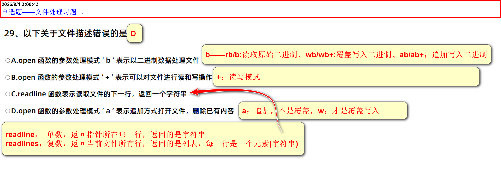
字典习题一
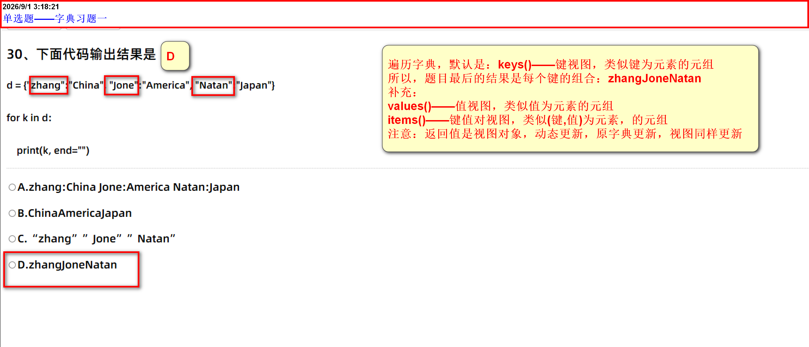
字典习题二
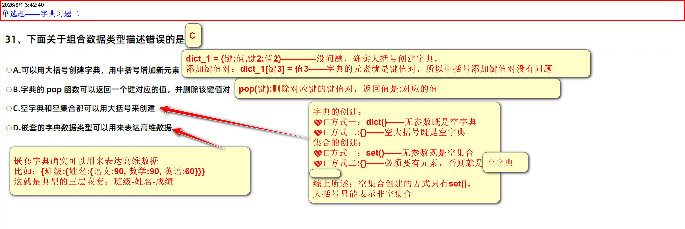
python机器学习第三方库
pytho机器学习第三方库 |
||
|---|---|---|
| 库名 | 一句话考点 | 关键词 |
Scikit-learn |
传统机器学习 | 分类、回归、聚类 |
TensorFlow |
深度学习 | 谷歌的深度学习框架 |
keras |
深度学习 | 高层神经网络API、常与TensorFlow一起考 |
mxnet |
深度学习 | 亚马逊支持的深度学习框架 |
Pytorch |
深度学习 | Meta 的深度学习框架 |
Numpy |
科学计算基础 | 多维数组、数学运算 |
Pandas |
数据处理与分析 | DataFrame、数据清洗 |
Matplotilb / Seaborn |
数据可视化 | 绘图、图表 |
XGBoost / LightGBM |
结构话数据/竞赛 | 梯度提升树、高精度 |
Hugging Face |
自然语言处理(NLP) | 预训练模型、BERT、GPT |
OpenCV |
计算机视觉(CV) | 图像处理、目标检测 |
python-web相关库
python-web相关库 |
||
|---|---|---|
库名 |
一句话考点 | |
Django |
最流行的 Web 框架（大而全） | |
Flask |
轻量级 Web 框架（小而精） | |
Pyramid |
灵活、可扩展的 Web 框架 | |
Tornado |
异步非阻塞 Web 框架 | |
WeRoBot |
微信公众号开发框架 | |
Pylons |
Web 开发框架（常作为“机器学习库”题的干扰项） | |
requests |
HTTP 请求库（爬虫常用） | |
beautifulsoup4 |
HTML/XML 解析库（爬虫常用） | |
三方库习题一
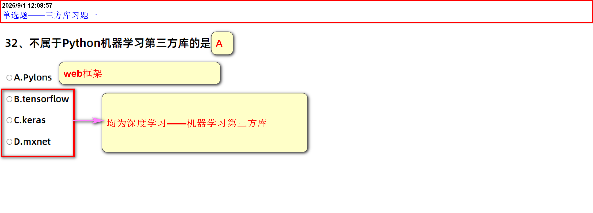
模块与包习题一
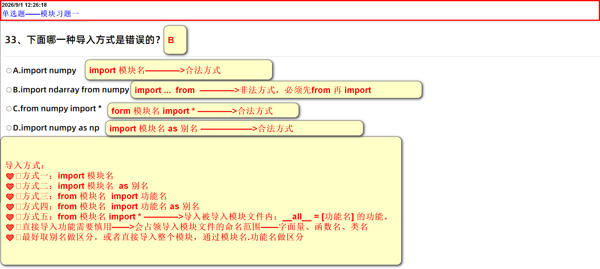
三方库习题二
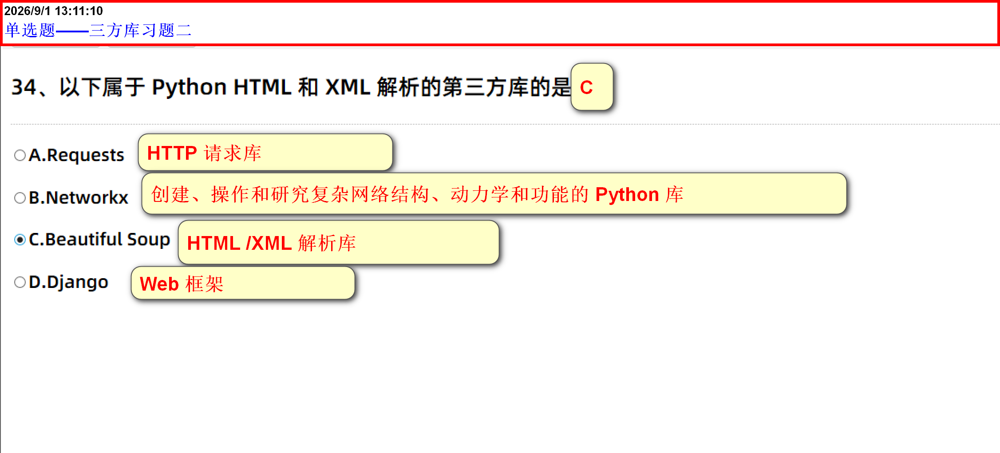
代码片段题四
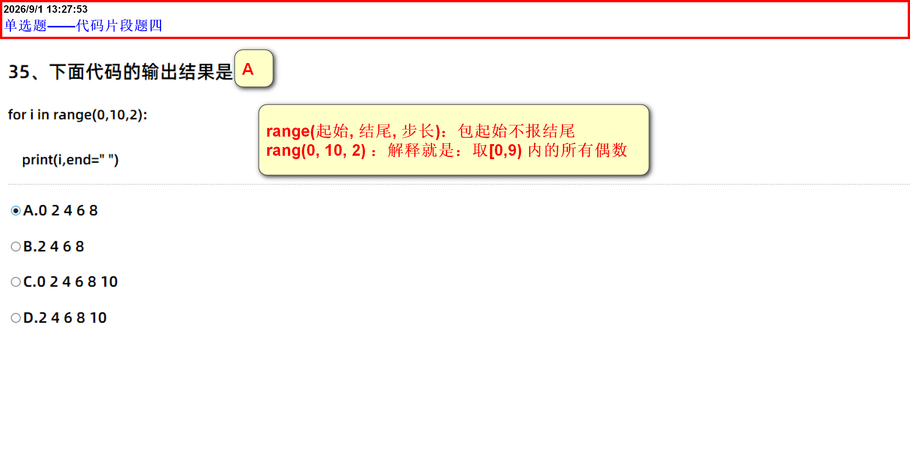
代码片段题五
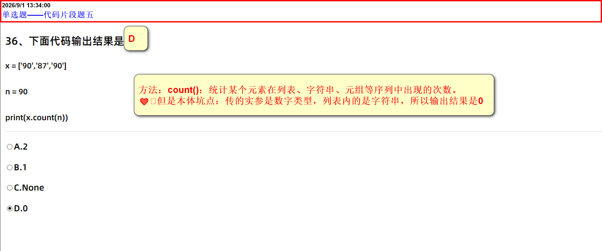
map() 方法
-
作用
- 将指定的函数应用于可迭代对象的每一个元素，返回一个迭代器
-
语法
map(函数, 可迭代对象1, 可迭代对象2, ...) -
参数说明
- 函数：可以是内置函数（如
str、int、float），也可以是lambda表达式或自定义函数 - 可迭代对象：列表、元组、字符串、range 对象等
- 函数形参数量 = 可迭代对象的数量
- 函数：可以是内置函数（如
-
返回值
- 返回一个迭代器（不是列表，不是元组）
- 惰性计算：只有被遍历时才会执行映射
- 一次性：遍历完后不能再次遍历
-
基础用法
map(str, [1, 2, 3])- 将列表中的每个元素转为字符串
- 返回迭代器，可用
list()转换为列表查看
-
多参数用法
map(lambda x, y: x + y, [1,2,3], [10,20,30])- 函数需要 2 个参数 → 传入 2 个可迭代对象
- 从两个列表中按位取元素，传给 lambda 处理
- 结果：
[11, 22, 33] - 如果长度不一致，截断到最短的那个
-
常见组合：map() + join()
- 场景：将数字列表转为字符串并用分隔符连接
",".join(map(str, [90, 87, 93]))→"90,87,93"-
执行流程：
map(str, x)创建迭代器（惰性，不立即执行）join()被调用，遍历迭代器，取出每个元素- 每个元素调用
str()转为字符串 join()用分隔符连接所有字符串
- 注意：
join()要求参数中的每个元素都是字符串，所以必须先用map(str, ...)转换
-
等价写法
map(str, [1, 2, 3])- 等价于
map(lambda x: str(x), [1, 2, 3])
-
与生成器表达式的对比
对比维度 map() 生成器表达式 写法 map(str, x)(str(i) for i in x)返回值 迭代器 生成器（也是迭代器） 适用场景 已有函数时更简洁 需要复杂逻辑时更灵活 -
常见陷阱
-
陷阱一：
map(str, x)返回迭代器，不是列表- 如果直接
print(map(str, [1,2,3]))，输出的是迭代器对象地址，不是内容 - 需要用
list(map(str, [1,2,3]))才能看到结果
- 如果直接
-
陷阱二：迭代器是一次性的
- 遍历过一次后，再次遍历为空
-
陷阱三：
str(list)不等于map(str, list)str([90,87,93])得到"[90, 87, 93]"（整个列表转字符串）map(str, [90,87,93])将每个元素逐个转字符串- 两者完全不同，混用会导致
join()结果异常
-
陷阱一：
-
map() 与 str(list) 的对比
对比维度 map(str, x) str(x) 输入 x = [90, 87, 93]x = [90, 87, 93]返回值 迭代器，每个元素是字符串 整个列表的字符串表示 结果示例 "90","87","93""[90, 87, 93]"join() 结果 "90,87,93""[,9,0,,,8,7,,,9,3,]"（含空格时不同） -
一句话总结
- map() 是惰性映射工具，配合 join() 使用时，先将元素转字符串，再连接。
- 函数形参数量 = 可迭代对象数量
- 复杂逻辑用生成器表达式，简单映射用 map()
join() 方法
-
作用
- 用指定的分隔符，将一个可迭代对象中的所有元素拼接成一个字符串
-
语法
分隔符.join(可迭代对象) -
参数说明
- 分隔符：字符串，如
","、"."、" "、""（空字符串） - 可迭代对象：列表、元组、字符串、range 对象、生成器、map 对象等
- 分隔符：字符串，如
-
核心要求
- 可迭代对象中的每一个元素都必须是字符串类型（str）
- 如果包含任何非字符串元素，会抛出
TypeError
-
返回值
- 返回一个字符串
- 不会在开头和末尾添加分隔符，只在相邻两个元素之间插入
-
特性
- 主动执行：调用时立即遍历整个可迭代对象，不是惰性方法
- 消费迭代器：如果传入的是迭代器（如 map、生成器），会将其完全遍历
-
基础用法
",".join(["a", "b", "c"])→"a,b,c"".".join("abc")→"a.b.c"（字符串也是可迭代对象）"".join(["a", "b", "c"])→"abc"（空字符串连接）
-
常见组合：join() + map()
- 场景：将数字列表转为字符串并用分隔符连接
",".join(map(str, [90, 87, 93]))→"90,87,93"- 执行流程：
join()被调用，立即遍历map返回的迭代器- 每次取一个元素，调用
str()转为字符串 - 用分隔符连接所有转换后的字符串
- 注意：必须先用
map(str, ...)或生成器表达式将元素转成字符串，否则join()会报TypeError
-
常见错误
-
错误一：直接连接数字列表
",".join([90, 87, 93])→ ❌ 抛出TypeError，因为元素不是字符串
-
错误二：误以为
join()会转换类型- 错误认知：
join()会自动把数字转成字符串 - 正确认知：
join()不会做任何类型转换，只要求元素已经是字符串
- 错误认知：
-
错误三：混淆
str(列表)和join(map(str, 列表))str([90,87,93])→"[90, 87, 93]"（整个列表转字符串）",".join(map(str, [90,87,93]))→"90,87,93"（逐个转字符串再连接）
-
错误一：直接连接数字列表
-
常见陷阱
-
陷阱一：空字符串连接
"".join(["a", "b", "c"])→"abc"- 如果元素是字符串，空分隔符直接连接所有字符
-
陷阱二：元素包含非字符串
",".join(["a", 1, "c"])→TypeError（即使只有一个非字符串）
-
陷阱三：join 不会在末尾添加分隔符
",".join(["a", "b", "c"])→"a,b,c"，不是"a,b,c,"- 如果需要在末尾加分隔符，需要手动拼接：
",".join(["a", "b", "c"]) + ","
-
陷阱一：空字符串连接
-
join() 与 str() 的对比
对比维度 join() str() 输入 可迭代对象（元素必须是字符串） 任意对象 返回值 用分隔符连接的字符串 对象的字符串表示 列表输入 ",".join(["a","b","c"])→"a,b,c"str([90,87,93])→"[90, 87, 93]"转换能力 不转换元素类型，只拼接 尝试将整个对象转为字符串 适用场景 将多个字符串合并成一个 查看对象的字符串表示 -
一句话总结
- join() 是字符串拼接工具，它不转换类型、不添加边界、主动遍历传入的可迭代对象。
- 使用时必须确保可迭代对象中的每个元素都是字符串。
- 与 map() 组合是最常见的用法：先用 map() 转类型，再用 join() 拼接。
方法map()+join()
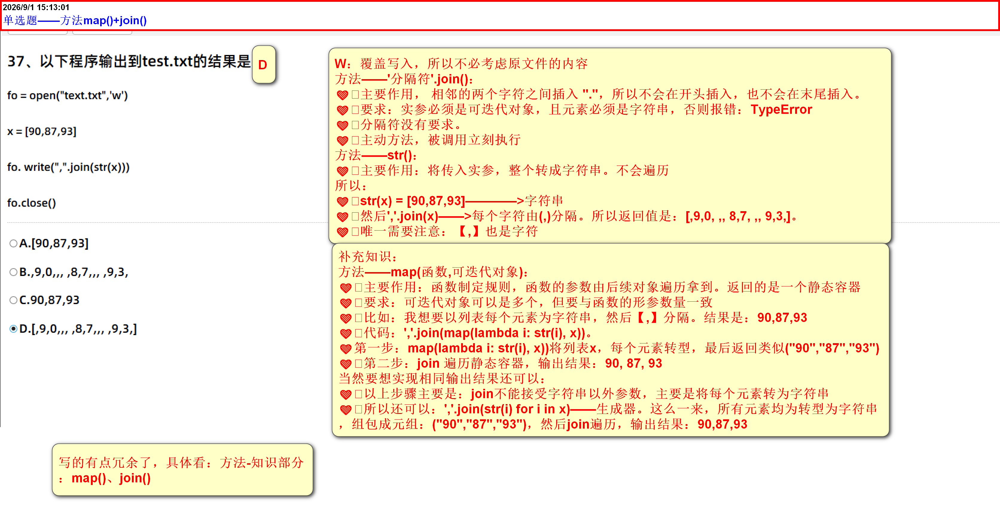
切片习题一
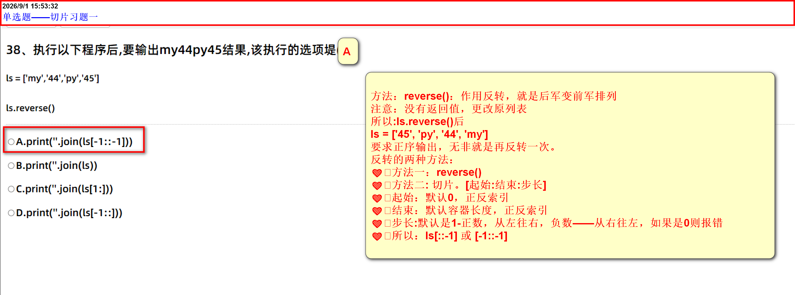
函数习题一
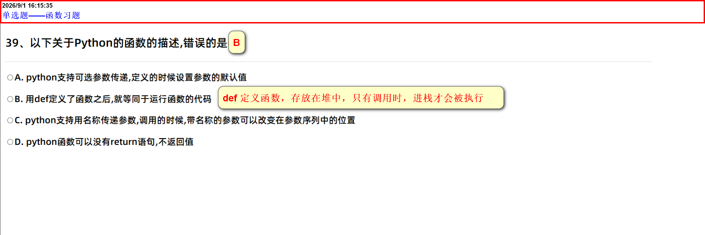
函数习题二
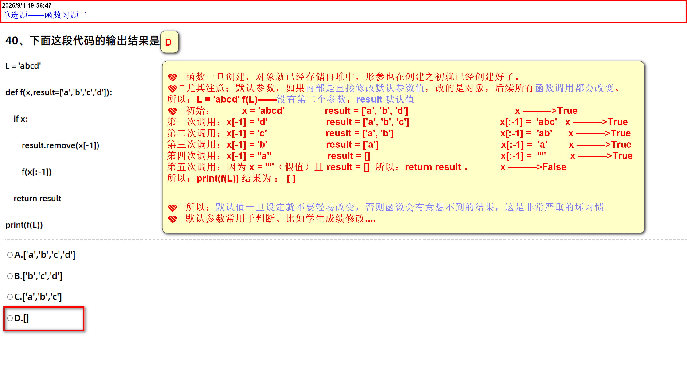
栈与堆习题一
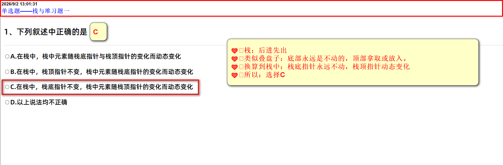
栈与队列，地址指针变化
栈与队列指针变化区别 |
||
|---|---|---|
栈(Stack) |
队列(Queue) |
|
| 操作端 | 同一端(栈顶) | 两端(对头出，对位入) |
| 固定指针 | 栈底固定 | 没有固定指针 |
| 变化指针 | 栈顶变化 | 队头、队尾都在变化 |
| 特点 | 后进先出(LIFO) |
先进先出(FIFO) |
| 类比 | 叠盘子 | 排队付款 |
队列模型
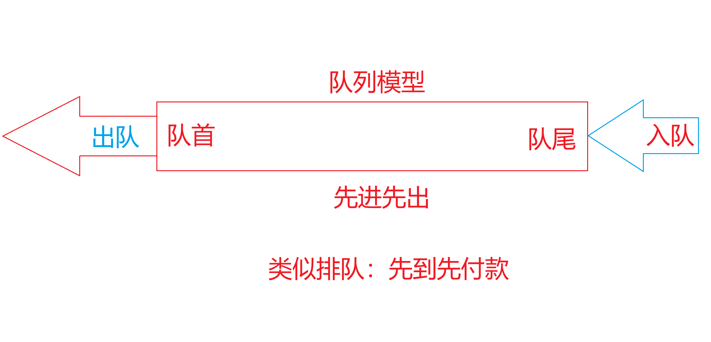
队列知识(零基础)
-
队列得定义
- 队列是一种 先进先出(
FIFO，First In First Out)的线性数据结构 -
核心思想
- 新元素从队尾(rear)进入(入队)
- 旧元素从队头(front)离开(出队)
-
现实类比
- 排队结账(先到的人先付款，后面的人排后面)
- 打印机任务队列(先提交的任务先打印)
- 消息队列 (先法的消息先被处理)
- 队列是一种 先进先出(
-
队列的基本操作
操作 说明 时间复杂度 入队( enqueue/push)在队尾添加一个元素 O(1)出队( dequeue/pop)在对头移除一个元素 O(1)查看队头( front/peek)返回队头元素，但不移除 O(1)判空( is_empty)判断队列是否为空 O(1)获取大小( size)返回队列中元素个数 O(1) -
队列在python中的实现
- python提供了多种方式实现队列：
-
方式一：列表(不推荐用于大型队列)
-
queue = []
queue.append(1) # 入队(队尾)
queue.append(2) # 后入队(队尾)
print(queue.pop(0)) # 出队 (对头) 输出1 - 问题：
pop(0)是O(n)操作，因为要移动后面所有元素。
-
-
方式二：collections.deque(推荐)
-
from collections import deque
queue = deque()
queue.append(1) # 入队 (队尾)
queue.append(2) # 后入队 (队尾)
print(queue.popleft()) # 出队 (对头) 输出 1 # O(1) deque是双端队列，从两端操作都是 O(1)，非常适合做队列
-
-
方式三：queue.Queue（线程安全、适合多线程场景）
-
from queue import Queue
q = Queue()
q.put(1) # 入队
q.put(2) # 后入队
print(q.get()) # 出队 # 输出 1
-
-
队列的分类 类型 特点 实现方式 普通队列 用数组或链表实现，FIFO deque、Queue循环队列 用数组实现，逻辑上首尾相连，充分利用空间 自定义类或 deque双端队列( Deque)两端都可以入队和出队 collections.deque优先队列 元素带优先级，优先级高的先出队 heapq、queue.PriorityQueue -
普通队列 VS 循环队列
-
普通队列
- 用一段连续空间存储
- 队尾入队、对头出队
- 缺点：出队后前面的空间无法复用，可能导致'假溢出'(队尾已满，但前面有空位)
计算入队后的新队尾位置——适用普通队列：rear = rear + 1计算入队后的新队首位置——适用普通队列：front = front + 1
-
循环队列
- 把数组在逻辑上连成环
- 入队/出队时指针可以绕回到数组开头
- 优点：空间可以复用，不会出现'假溢出'。但是元素超出限制，会'真溢出'
-
关键公式(循环队列)
当 front == rear 时，队列为空当 (rear + 1) % 容器 == front 时，队列为满 (牺牲一个存储单元)计算入队后的新队尾位置——适用循环队列：rear = (rear + 1) % 容量计算入队后的新队首位置——适用循环队列：front = (front + 1) % 容量队列长度 = (rear - front + 容量) % 容量
-
-
二级考试中的队列考点
考点 常见问法 核心注意点 队列的操作顺序 '先入先出，谁先出队？' 先入队的先出队 栈与队列对比 一下那个是队列的特性？ 栈是:LIFO、队列是：FIFO 循环队列元素个数 front == rear = ?，元素个数 用； (rear - front + 容器) % 容器循环队列判空判满 front == rear 表示什么 通常表示空 (或满，需看具体实现) 队列的入队/出队顺序 给出入队顺序，求最终队列 按：FIFO 规则模拟即可
队列习题一
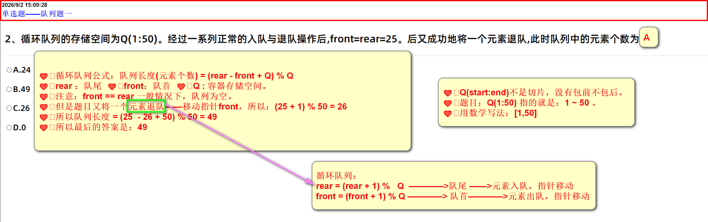
叉树习题一
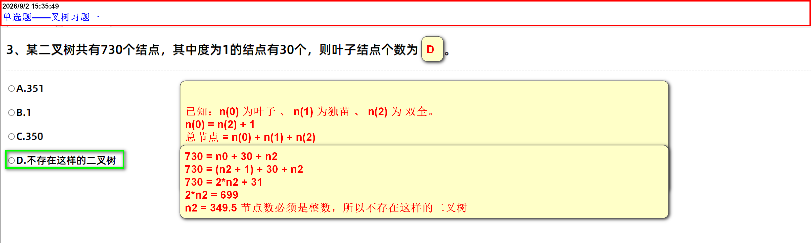
叉树习题二
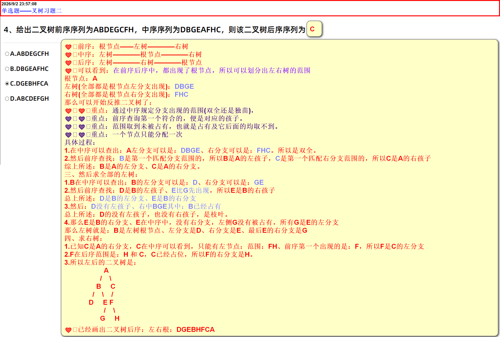
叉树——前序、中序、后序
- 前序：根节点————根左全部分支集合————根右全分支集合
- 中序：根左全部分支集合————根节点————根右全部分支集合
- 后序：根左全部分支集合————根右全部分支集合————根节点
- 二叉树、K叉树都支持
-
主要考点：告诉前序、中序求后序。或后序、中序求前序
- 步骤一：直接求根节点(前序在首、后序在尾)以及左右分支集合(中序中，根节点左边为左集合、右边为右集合)。
-
步骤二：先求左树(根节点左分支以及所有左子节点)或右树(根节点右分支以及所有右子节点),反正最后都要求
- 内步骤一：先看中序：查看是：(枝叶【度0】、独苗【度1】——看某方没有节点可选、双全【度2】)
- 内步骤二：查找对应节点范围：不管左右，范围只要碰到已经占有的节点，那么占有节点以及后续节点取不到
- 内步骤三：拿到范围到前序或后序查找，范围内第一个出现就是对应的节点。(如果是独苗，看中序)
- 注意：一个节点，只能分配一次，这也是，已经占有节点，以及它后续不能取的原因
- 步骤三：通过步骤二、求出所有节点，画出叉树
- 步骤四：求：前序或后序。注意对应的顺序。
偷懒专用
- 如果考试，选项，根节点的位置，刚好只有一个正确，那么就能秒了
- 比如求后序：先推算出根节点、然后看选项，后序根节点在尾，如果只有一个选项，就是它没跑了
- 比如求前序：先推算出根节点、然后看选项，后序根节点在首，如果只有一个选项，就是它没跑了
- 案例：叉树习题二——重点，建议反复看
软件集成测试组装方式
-
一、非增量式集成（一次性组装）
- 定义：把所有模块一次性组装成完整的系统，然后整体测试
- 优点：操作简单、测试效率高
- 缺点：一旦发现错误，很难快速定位到底是哪个模块或接口出了问题，排错和维护成本极高
- 结论：不推荐使用，考试中“不采用”的选项就是它
-
二、增量式集成（主流方式）
- 逐步加入模块进行测试，更容易定位错误
-
1. 自顶向下增量组装
- 定义：从主控模块（根节点）开始，逐步将下一层模块加入测试
- 优点：早期验证系统的主要控制结构和逻辑
- 缺点：底层桩模块开发工作量大，底层关键模块可能测试不充分
-
2. 自底向上增量组装
- 定义：从最底层模块（叶子模块）开始，逐步向上组装
- 优点：早期验证底层模块功能，驱动模块开发相对简单
- 缺点：系统整体框架和主控逻辑的验证被推迟到后期
-
3. 三明治式集成（混合增量组装）
- 定义：同时使用自顶向下和自底向上两种策略
- 策略：上层用自顶向下，底层关键模块用自底向上，在中间汇合
- 优点：结合两者优点，早期验证高层逻辑和底层核心功能
- 缺点：测试协调工作较为复杂
-
4. 迭代式组装（连续集成）
- 定义：持续、频繁地将代码变更集成到主干，每次集成都进行自动化测试
- 核心思想：尽早发现集成问题，快速修复
- 优点：风险低、反馈快
- 缺点：对自动化测试要求很高
-
集成测试组装方式速查表
类型 组装方向 优点 缺点 一次性组装 全部一起 操作简单 错误难以定位 自顶向下 根 → 叶 早期验证主控逻辑 桩模块工作量大 自底向上 叶 → 根 早期验证底层功能 主控逻辑验证晚 三明治式 上下同时 兼具两者优点 协调复杂 迭代式 持续集成 风险低、反馈快 自动化要求高 -
💡 记忆口诀
- “集成策略想分清，先看增量与一次。增量四种往下记：顶、底、混合、迭代式。”
软件集成组装策略习题
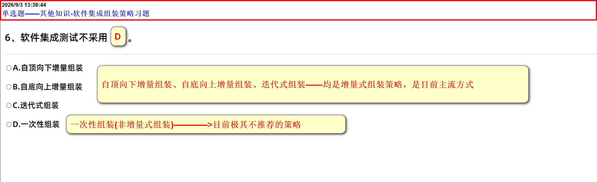
数据流图（DFD）
-
定义
- 数据流图是描述系统数据流向的图形化工具
- 从数据传递和加工的角度，描绘数据在系统中流动的逻辑过程
- 结构化分析方法中最重要的建模工具
-
四大核心要素（二级必考）
符号 名称 含义 例子 矩形 外部实体 系统外部的组织或人，数据的来源或去向 顾客、银行、仓库 圆角矩形/圆形 处理过程（加工） 对数据进行的变换或操作 验证订单、计算工资 开口矩形 数据存储 数据的存放处 订单表、员工档案 带箭头线段 数据流 数据的流动方向 订单信息、付款金额 -
数据流图 vs 程序流程图（必区分！）
对比维度 数据流图（DFD） 程序流程图（PFC） 核心描述 数据的流动和处理过程 程序的执行逻辑和顺序 关注点 系统要“做什么”（逻辑模型） 程序怎么“一步步做”（物理实现） 包含元素 只有四种：实体、加工、存储、数据流 包含判断框、循环框、箭头等控制流元素 关键词 数据的来源和去向 先判断、再循环、执行步骤 -
分层结构
- 顶层图（上下文图）：一个处理过程，代表整个系统，展示与外部实体的数据交换
- 0层图：将顶层图展开成多个主要过程，显示系统主要功能模块
- 子层图：对0层图中某个过程继续展开细化
-
记忆口诀
- “数据流图看‘物流’，程序流程图看‘工序’”
- “数据流图四要素：实体、加工、存储、流”
数据库范式
-
题目
- 定义学生的关系模式如下：
S(S#, Sn, Sex, Age, D#, Da)
属性分别为：学号、姓名、性别、年龄、所属学院、院长
该关系的范式最高是（ ）。 -
答案：2NF（第二范式）
- 定义学生的关系模式如下：
-
解题思路
-
第一步：找依赖关系
- 候选键：S#（学号）
- S# → Sn（学号决定姓名）
- S# → Sex、S# → Age、S# → D#
- D# → Da（学院编号决定院长）
- 存在传递依赖：S# → D# → Da
-
第二步：判断范式等级
- 1NF：属性不可再分 → ✅ 满足
- 2NF：非主属性完全依赖于候选键 → ✅ 满足（S#是单属性候选键）
- 3NF：不存在传递依赖 → ❌ 不满足（存在 S# → D# → Da）
- 结论：最高为 2NF
-
-
范式速查表
范式 要求 不满足时的问题 1NF 属性不可再分 数据冗余 2NF 1NF + 非主属性完全依赖于候选键 部分依赖 3NF 2NF + 不存在传递依赖 传递依赖 BCNF 3NF + 所有决定因素都是候选键 主属性部分依赖 -
记忆口诀
- “学号决定学院，学院决定院长”——传递依赖 → 最高 2NF
静态语言与脚本语言
| 静态语言 VS 脚本语言(解释型语言) | ||
|---|---|---|
| 对比维度 | 静态语言(编译型) | 脚本语言(解释型) |
| 执行方式 | 编译(一次性翻译成机器码) | 解释(逐行翻译并执行) |
| 是否生成可执行文件 | ✅ 生成如（.exe） |
❌ 不生成，依赖解释器 |
| 运行速度 | 块(已提前编译好) | 慢(边翻译边执行) |
| 典型代表 | C、C++、Java |
python、JavaScript、PHP |
| 以来什么执行 | 直接由操作系统执行机器码 | 需要解释器(如：python解释器) |
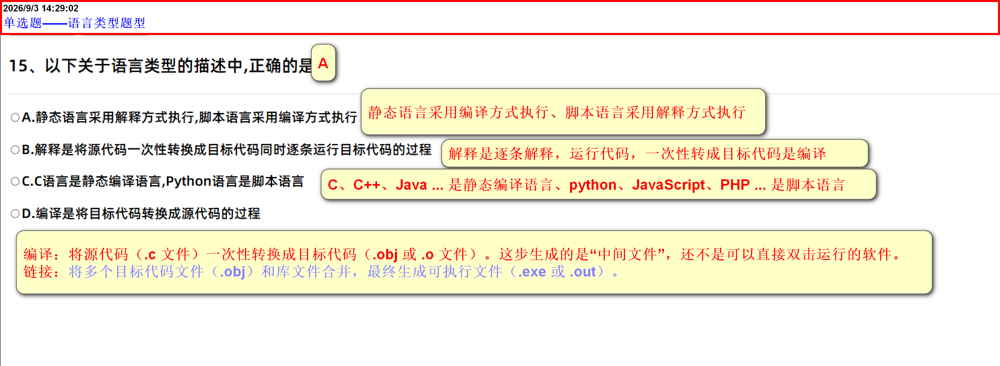 |
||
函数习题三
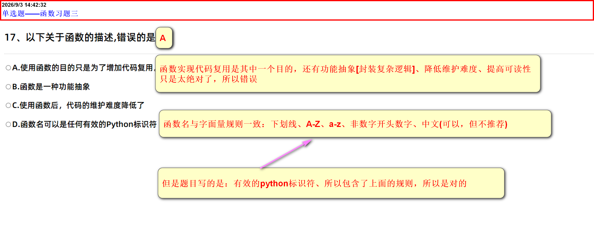
代码片段题六
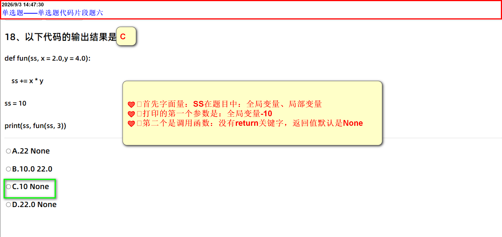
代码片段题七
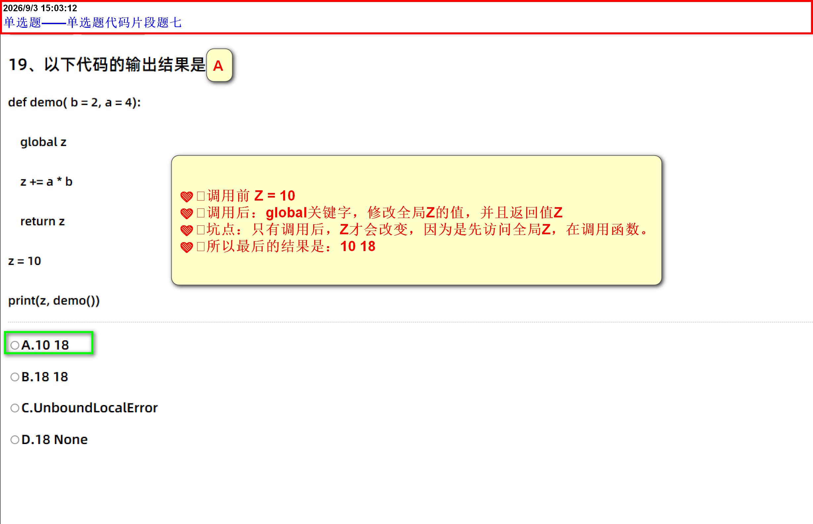
程序控制结构题二
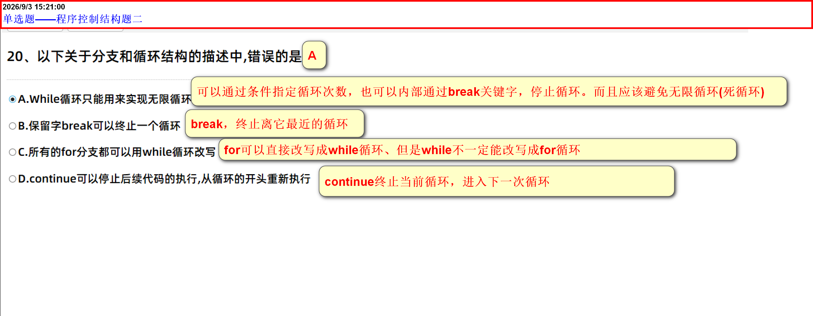
模块random习题一
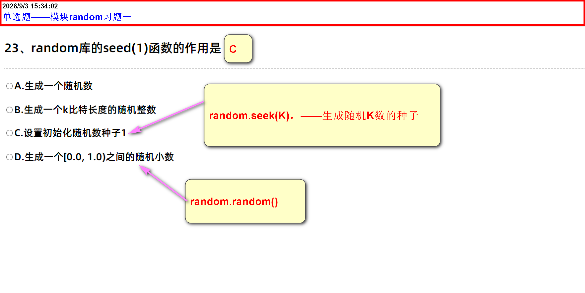
运算符习题三——包括知识
-
在自定义类创建的实例对象比较：如果没没有显式写魔法方法：
__lt__、__gt__、__le__、__ge__、__eq__，直接进行比较，则报错。 - 但如果是：内置容器：列表、字符串、元组、字典、集合有自己的内置判断方式
-
python容器比较速查表
类型 == / !=> / < / >= / <=比较规则 类型不匹配时 列表(list) 支持 支持 字典序：逐个元素比较，同类型比大小，分出结构即停止 TypeError元组(tuple) 支持 支持 字典序：与列表相同 TypeError字典(dict) 支持 不支持 只比键值对是否完全相同 直接报： TypeError集合(set) 支持 支持(含义不同) >是超集，<是子集，不是大小比较与集合外类型比较时报： TypeError字符串(str) 支持 支持 字典序：逐字符按 Unicode 码点比较 只和字符串比较，其他类型报 TypeError数字(int/float) 支持 支持 按数值大小比较 数字之间可以跨类型比较（1 < 2.0 合法），非数字报错： TypeError - 三大区间：
数字(0~9) < 大写字母(A-Z) < 小写字母(a-z) -
常用字码点参考(不用背、心里有数就行) 字符 码点 记忆法 '0' 48 数字起点是：48 '9' 57 数字终点是：57 'A' 65 大写的起点是：65 ‘Z’ 90 大写的终点是：90 'a' 97 小写的起点是：97 ‘z’ 122 小写的终点是：122
>运算符与容器习题一
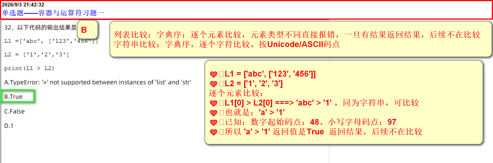
>三方库习题三
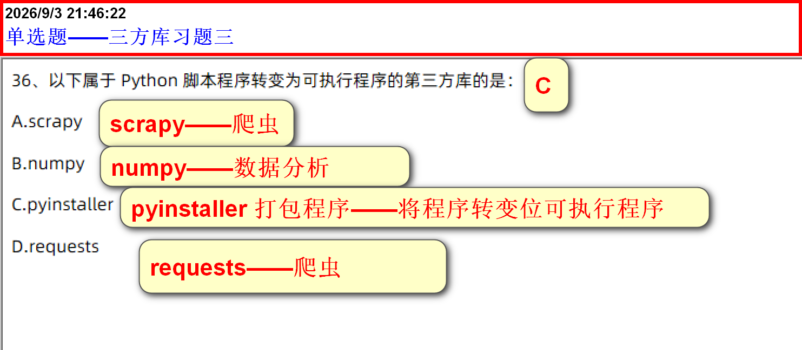
>三方库习题四
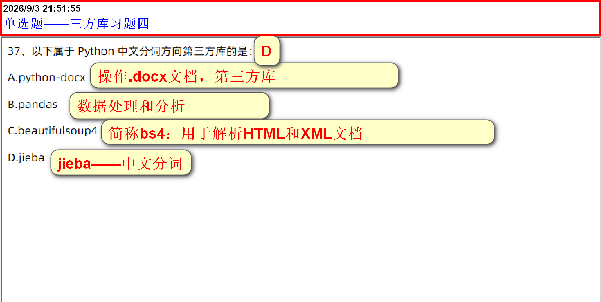
>三方库习题五
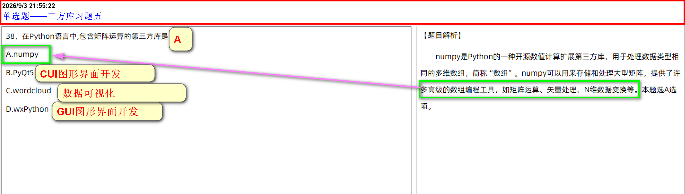
>三方库习题六
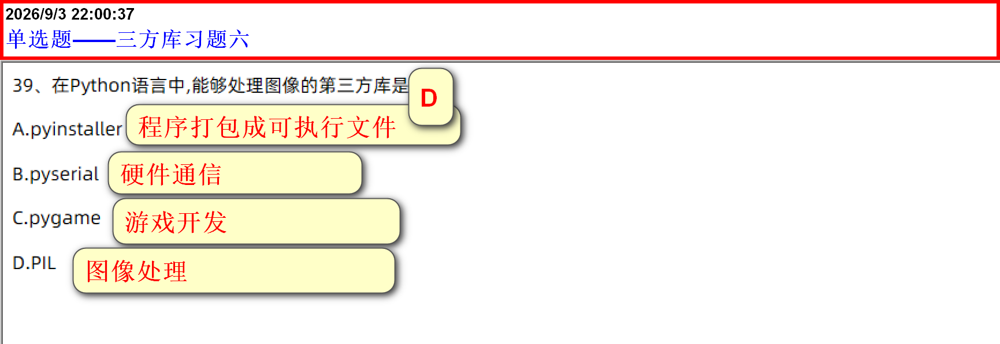
>三方库习七
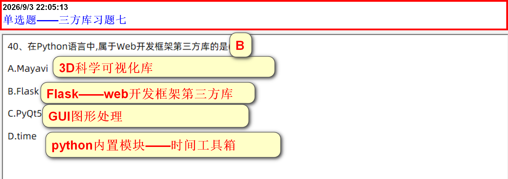
叉树习题三
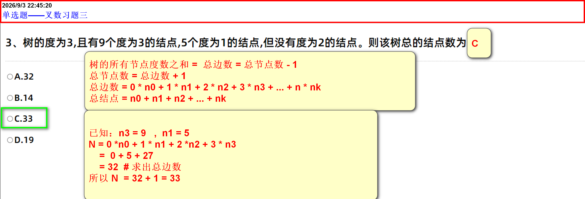
栈习题一
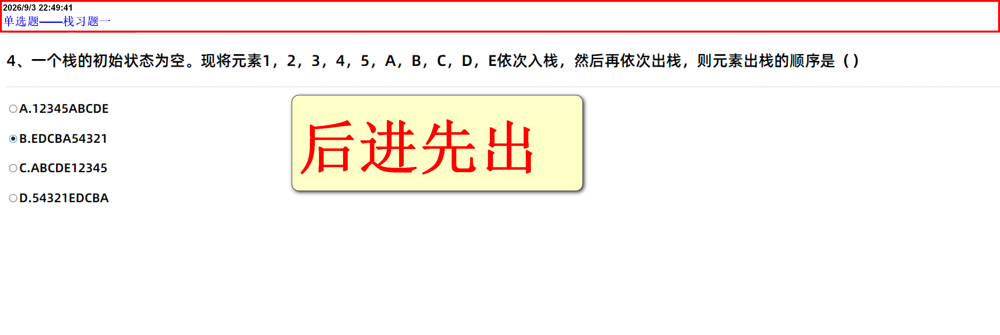
结构化程序设计习题一
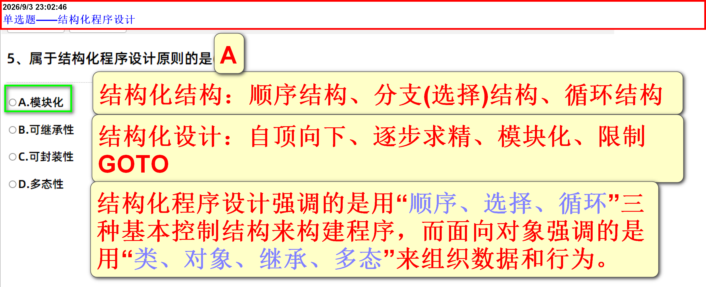
软件工程常见文档速查表
| 文档名称 | 核心作用 | 产生阶段 | 一句话记忆 |
|---|---|---|---|
| 可行性研究报告 | 确定项目是否值得做（技术、经济、法律可行性） | 项目立项前 | “做不做？” |
| 软件开发计划 | 规划项目如何开展（人员、进度、资源、预算） | 项目启动初期 | “怎么做？” |
| 软件需求规格说明书 | 明确系统要做什么（功能需求、性能需求、接口需求） | 需求分析阶段 | “做什么？” |
| 概要设计说明书 | 确定系统整体架构（模块划分、接口设计、数据库设计） | 概要设计阶段 | “大框架” |
| 详细设计说明书 | 描述每个模块具体实现（算法、数据结构、接口细节） | 详细设计阶段 | “细节实现” |
| 用户手册 | 教用户如何使用系统（操作步骤、功能说明） | 开发后期/交付前 | “用户怎么用” |
| 操作手册 | 指导运维人员如何部署和维护系统 | 开发后期/交付前 | “运维怎么管” |
| 测试计划 | 制定测试策略（测试范围、方法、资源、进度） | 测试阶段前 | “怎么测” |
| 测试分析报告 | 记录测试结果（缺陷统计、测试覆盖率、通过/失败情况） | 测试阶段后 | “测的结果” |
| 项目开发总结报告 | 总结项目经验（进度偏差、成本偏差、经验教训） | 项目验收阶段 | “干得怎么样” |
| 维护手册 | 指导后期维护（Bug修复、功能扩展、版本升级） | 交付后 | “后期怎么修” |
🧠 二级考试常考（选择题速记）
| 常考问题 | 正确答案 |
|---|---|
| 确定项目是否进行开发的文档 | 可行性研究报告 |
| 确定系统“做什么”的文档 | 软件需求规格说明书 |
| 描述系统“整体架构”的文档 | 概要设计说明书 |
| 描述“具体模块实现”的文档 | 详细设计说明书 |
| 制定测试策略的文档 | 测试计划 |
| 记录测试结果的文档 | 测试分析报告 |
| 规划项目进度的文档 | 软件开发计划 |
💡 记忆口诀
- “可行性定生死，需求定功能，概要定架构，详细定实现，测试定质量，报告定结果。”
软件测试方法分类
-
一、按测试方法分类
测试方法 核心思想 常见代表 黑盒测试 只关注输入/输出，不关心内部代码逻辑 功能测试、等价类划分、边界值分析 白盒测试 关注内部代码逻辑和结构 基本路径测试、逻辑覆盖（语句覆盖、分支覆盖、条件覆盖） -
二、按测试方式分类
测试方式 核心思想 常见代表 静态测试 不运行程序，只检查代码、文档等 代码审查、走查、桌面检查 动态测试 实际运行程序，输入数据验证 基本路径测试、功能测试、集成测试 -
三、两种维度组合（核心考点）
静态测试 动态测试 黑盒测试 ❌ 很少见 ✅ 功能测试、等价类划分、边界值分析 白盒测试 ✅ 代码审查 ✅ 基本路径测试、逻辑覆盖 -
🎯 二级考试最常考的一句话
- 基本路径测试 = 白盒测试 + 动态测试
基本路径测试习题一
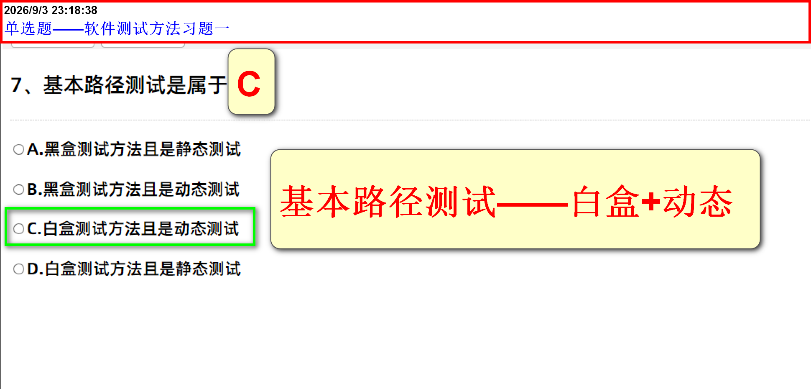
软件工程文档习题一
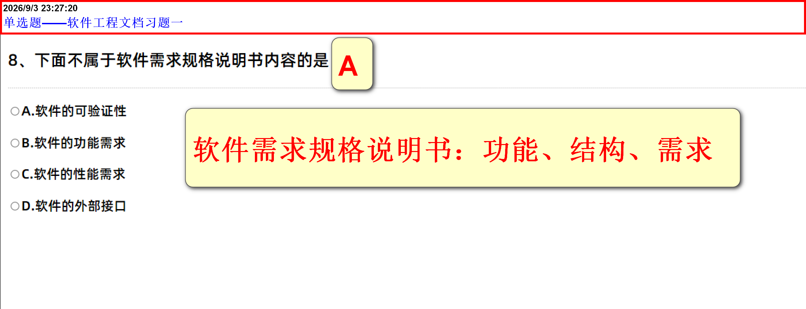
软件工程文档习题二
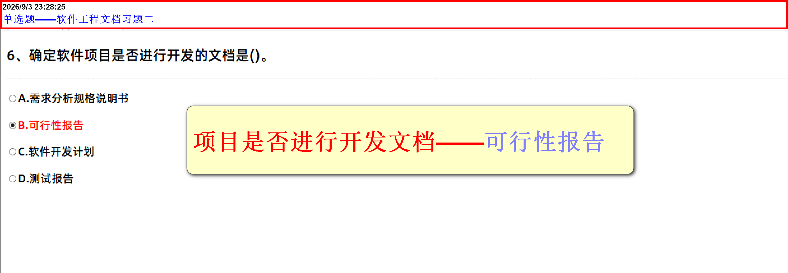
关系模式类型题
- 关系模式：一般通过
#来确定主键、如果有多个则#组合成一个主键 - 主属性：就是组成主键的各个字段（如 S#、C#）”。
- 非主属性：就是主键以外的所有字段
- 部分依赖：某个字段、与主键其中一个产生依赖
- 完全依赖：某个字段、与主键所有产生依赖
- 平凡依赖：某个字段是集合的子集(主键、字段集合)
- 传递依赖：某个字段通过其他非主属性字段，将自身依赖主键
- 第一范式(1NF)：所有属性(字段)都 不可再分，每个单元格只有一个数据
- 第二范式(2NF)：在满足1NF的基础上、不允许非主属性依赖主键的一部分（但允许依赖主键的全部，或者通过别的字段传递依赖）
- 第三范式(3NF)：在满足2NF的基础上，不允许非主属性依赖主键的一部分，也不允许非主属性传递依赖于主键
关系模式类型题
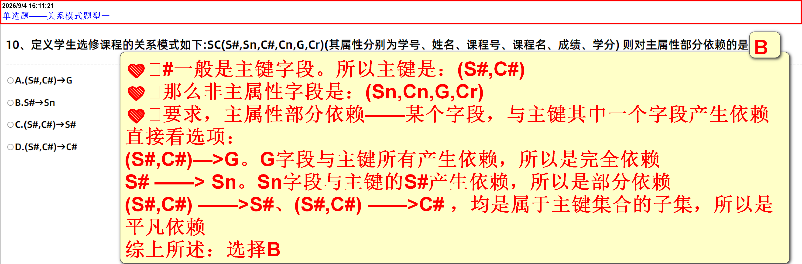
运算符习题三——浮点数运算坑点
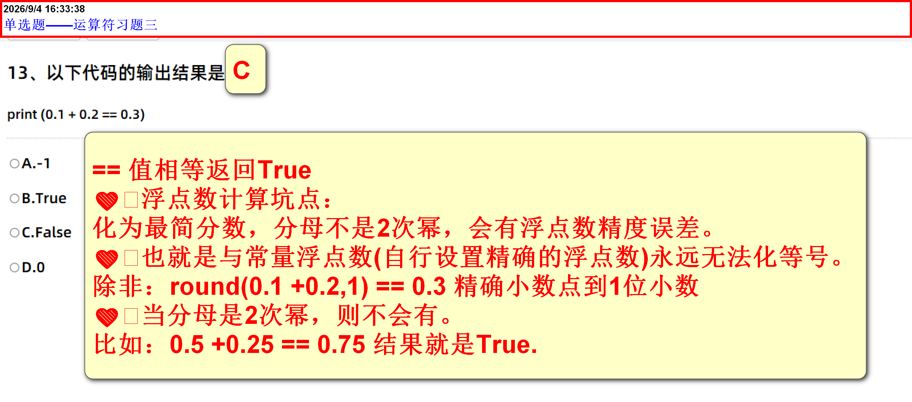
方法——format()
format()是 Python 字符串（str）自带的一个实例方法。- 它的作用就是：用括号里的参数，替换掉字符串中写好的 {} 占位符。
- 语法：
format('字符串')，必须是字符串，否则TypeError - 通常和 格式说明符一起使用
- 如：
print(':*^10.4').format('flower')-
再看:format()部分：
- format(‘flower’)
- 其中：flower是实参
-
再看：字符串(str)部分：
- 大括号包括-格式说明符
- 没有参数序号，所以默认是第一个参数
:后面说明符规则- 填充是：
*——说明，当字符串宽度有剩余，*补充 ^——表示居中(字符串在中间-两边往中间填充)- 字符串宽度是：
10 - 精度是：
4 - 类型默认是：字符串，所以，精度+类型：告诉我们的是：截取前4个字符
- 说以整个框架是：先截取实参前4个字符——(flow)为字符串，然后采用说明符规则
-
已知规则是：宽度：10，，所以需要填充(6个
*)，又因为居中，所以最后的输出结果是：***flow***
-
格式说明符
-
格式说明符：专门用来控制填入的内容长什么样（对齐、宽度、截断、填充）
-
写法格式：
{ {参数序号(可选)} + : + 填充 + 对齐 + 宽度 + 千位分隔符-，(可选) + .精度 + 类型 } - 必须是大括号内
- 参数序号：可以理解为索引，主要与后续方法：
format()打配合，序号是0，则是方法第一个参数、1，则是第二个参数，依次类推 :后面跟着的都是格式规则- 填充：当字符串长度与规定长度短时，由填充(字符)替代
- 对齐：
^:居中(代表占位符，两边填充)、<：代表占位符，末尾填充，>，代表占位符，左边填充 - width：顾名思义：代表该字符串长度
-
精度的效果与类型挂钩、精度必须是整数
类型(决定 [.] 后面根什么字母)
类型代码 使用数据 含义 s字符串 字符串格式(默认，通常省略不写),与精度打配合，截取前[]个字符 d整数 十进制整数(常用) f浮点数 定点小数(常用，显式小数点)，与精度打配合，确定输出浮点数的小数位数 e浮点数 科学计数法(如：1.23e+02) %浮点数 转成百分比格式(如：0.5 变成 50.000000%),通过精度，规定小数位数 x/ o / b整数 十六进制/八进制/二进制(二级偶尔考识别) - 外加补充，千位分隔符——只能作用于整数部分(从后往前，每3个字符一个,)，如果存在浮点数，需要(.精度f)规定小数位数
-
写法格式：
格式说明符习题一
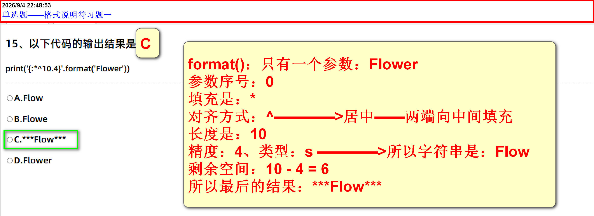
代码片段题八
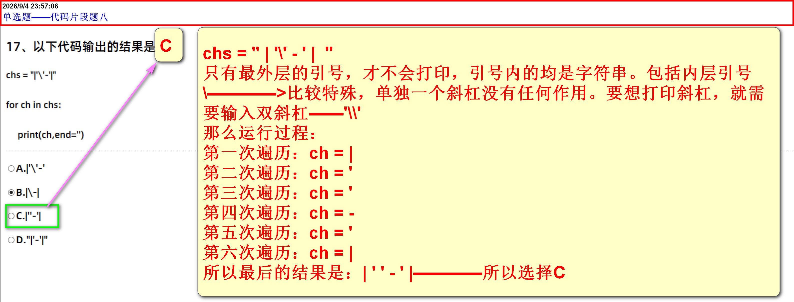
eval、exec、except —— 三大“易容术”辨析
-
一、
except—— “保护伞”- 本质：关键字（语句），不是函数。
- 作用：捕获并处理异常，防止程序崩溃。
- 固定搭配：必须和
try一起出现。 -
代码形态：
try:
x = int(input("输入数字："))
except ValueError:
print("输入的不是数字！") - 考场定位：必考！操作题和选择题都爱考，必须掌握
try-except-else-finally的结构。
-
二、
eval—— “执行器”（危险！）- 本质：内置函数，不是语句。
- 作用：把字符串当成 Python 表达式执行，并返回结果。
-
代码形态：
result = eval("2 + 3 * 4") # 返回 14
lst = eval("[1, 2, 3]") # 返回真正的列表 - ⚠️ 致命风险：代码注入！ 如果处理用户输入，攻击者可传入
__import__('os').system('rm -rf /')等恶意代码。 - 安全替代：用
ast.literal_eval()或json.loads()代替。 - 考场定位：极少考。考也只会问“能不能用”（答案通常是 不能，有安全风险）或返回值是什么。
-
三、
exec—— “执行器Pro版”- 本质：内置函数，和
eval是“兄弟”。 - 作用：执行字符串里的代码块（可含多行语句），但 没有返回值（永远返回
None）。 -
代码形态：
exec("print('Hello')") # 直接输出 Hello
exec("a = 10") # 没有返回值，但会创建变量 a - 考场定位：几乎不考。记住它有“无返回值”和“同样危险”这两个特征就够了。
- 本质：内置函数，和
-
四、
evalVSexec速查表对比维度 eval()exec()处理对象 表达式 代码块（含多行语句） 是否有返回值 ✅ 有（返回表达式结果） ❌ 无（永远返回 None）危险性 ⚠️ 极高（代码注入风险） 常见用途 计算表达式的值 执行动态逻辑语句 -
🎯 考场速记口诀（别再把它们搞混了！）
- “except 是抓虫子的网，eval 是开保险柜的钥匙，exec 是开保险柜的炸药包。”
-
看到
try必选except；看到字符串里套代码，先想eval和exec哪个更危险。 - 二级考试里，
except是常客，eval和exec是“背景板”，认识就行，别深交！
方法sorted()、type()、id()、all()、any()混合习题
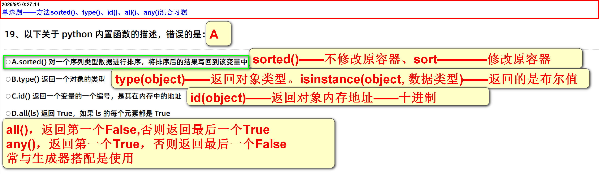
内置函数五虎将 —— sorted() type() id() all() any()
| 函数 | 一句话考点 | 坑点/陷阱 |
|---|---|---|
sorted() |
拍照不碰原图 | 返回新列表，原变量不变；list.sort() 才改原列表 |
type() |
查户口 | 返回类型对象；isinstance() 返回布尔值 |
id() |
查门牌号 | 返回内存地址的十进制整数，is 就是比地址 |
all() |
一假则假 | 遇 False 立即返回 False；常与生成器搭配 |
any() |
一真则真 | 遇 True 立即返回 True；常与生成器搭配 |
isinstance() |
认亲（连儿子也认） |
对比：type() 不认子类，isinstance() 认子类。大招：第二个参数可以是元组 (int, float)，满足其一即 True。
|
函数习题四
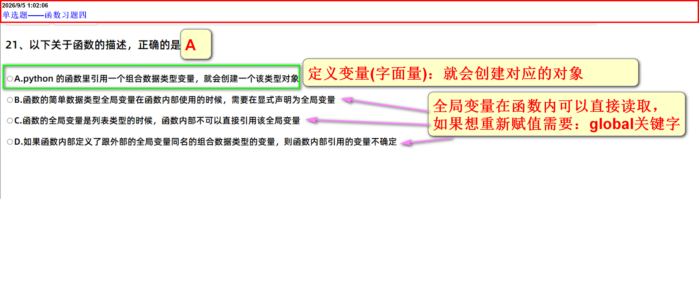
函数习题五
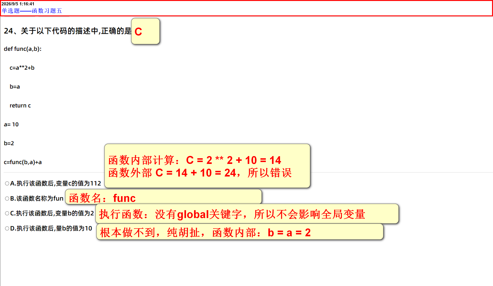
函数习题六
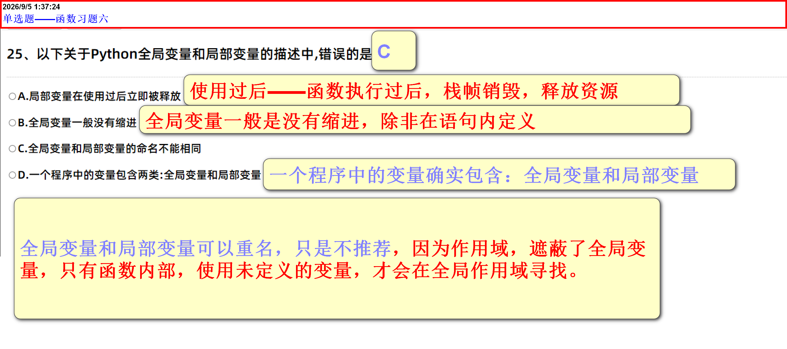
软件设计工具分类 —— 概要设计 vs 详细设计
- 核心区分： “概要设计”决定系统架构（模块划分）；“详细设计”决定模块内部逻辑（具体实现）。
-
设计阶段 核心任务 常用工具（考点） 一句话比喻 概要设计
（总体设计）确定系统的模块结构（分几个部分，怎么调用） 系统结构图、层次图、HIPO图 大楼的“平面图”
（几层楼，几个房间）详细设计 确定每个模块内部的算法和执行逻辑 程序流程图、N-S图（盒图）、PAD图、伪代码、判定表 大楼的“施工图”
（钢筋怎么走，水电怎么布） - 考场秒杀口诀： “问详细设计，排除系统结构图；看到流程图/N-S/PAD，秒选详细设计！”
- 常见干扰项： 如果选项里同时出现“系统结构图”和“程序流程图”，问“不属于详细设计”的，直接选 系统结构图（它是概要设计的）。
四种测试对应的阶段
软件工程 V 模型 |
|
|---|---|
| 测试阶段 | 对应发现那个阶段的错误 |
| 单元测试 | 详细设计(模块内部的算法和逻辑) |
| 集成测试 | 概要设计(模块间的接口和架构) |
| 系统设计 | 需求分析(软件规格说明书) |
| 验收测试 | 用户需求(用户的真实诉求) |
- 解决一个问题可以有不同的算法，且它们的时间复杂度可以是不同的
-
python常见的结构
常见逻辑结构
结构 关系 二级常考代表 线性结构 一对一 Stack、Queue、list、tuple、str树形结构 一对多 叉树 图形结构 多对多 二级不考、听过就行 散列结构 无直接关系 dict、set存储结构与排序算法对照表（二级常考）
分类 名称 核心特点 二级常考代表 存储结构 顺序存储 内存连续，通过下标直接访问 数组（list）、字符串（str） 链式存储 内存不连续，通过指针/地址链接 链表（LinkedList） 索引存储 通过索引表快速定位数据 数据库索引、文件系统目录 散列存储 通过哈希函数直接计算地址 字典（dict）、集合（set） 排序算法 插入排序 逐个插入已排序序列 直接插入排序 交换排序 通过交换元素来排序 冒泡排序、快速排序 选择排序 每次选出最大/最小元素 简单选择排序、堆排序 归并排序 分治合并有序子序列 二路归并排序 关键区分： 存储结构 关注数据在内存中的存放方式； 排序算法 关注数据如何按大小重新排列。 两者属于不同维度，可独立选择组合。 逻辑结构、存储结构、排序算法 对照表（二级常考） 分类 核心问题 常见形式 二级常考代表 逻辑结构 数据之间是什么关系？ 一对一 线性结构（栈、队列、列表） 一对多 树形结构（二叉树） 多对多 图形结构（二级不考） 无直接关系 散列结构（字典、集合） 存储结构 数据在内存里怎么放？ 顺序存储 数组、列表（连续内存） 链式存储 链表（不连续，靠指针） 索引存储 数据库索引、文件目录 散列存储 字典、集合（哈希表） 排序算法 数据怎么按大小重新排列？ 插入排序 直接插入排序 交换排序 冒泡排序、快速排序 选择排序 简单选择排序、堆排序 归并排序 二路归并排序 关键结论： 逻辑结构 管“关系”， 存储结构 管“存放”， 排序算法 管“操作”。 三者属于不同维度，可以独立组合。 考试注意
- 考试注意维度，不要维度混搭
- 存储结构是物理结构，它不能采用逻辑结构，也就是看到是存储结构采用逻辑结构，直接是错的
- 正确形式是：逻辑结构采用存储结构，这是对的
- 还需要注意:被采用、反正记住：存储结构主动采用就是错的
-
链表
- 链表是链式存储结构：内部是以："数据 + 地址(指针)"为元素的形式存储
- 每一个数据节点都有对应的指针，指向下一个节点
- 最后一个节点的指针为空（None / NULL），表示链表结束，不会报错。
- 空指针后面的元素不会被访问到。
- 链式存储本身是无序的，但可以与线性结构组合，使数据在逻辑上有序
- 所以链式存储既可以有序，也可以无序
- 注意：存储结构结构不能是主动方、不能主动采用逻辑结构
- 习题：线性结构(规定有序)也能采用链式存储结构，这句话是对的
- 比如：线性结构(规定有序)一定能能采用链式结构，这句话也是对的
- 比如：链式存储结构一定被能线性结构(规定有序)采用，这句话也是对的
- 比如：链式存储结构一定能被线性结构(规定有序)采用，这句话也是对的
- 反例：线性结构被链式存储结构采用，这句话是错的，存储结构变为了主动方
- Python语言中用来表示代码块所属关系的语法是(缩进)。
-
代码片段题一